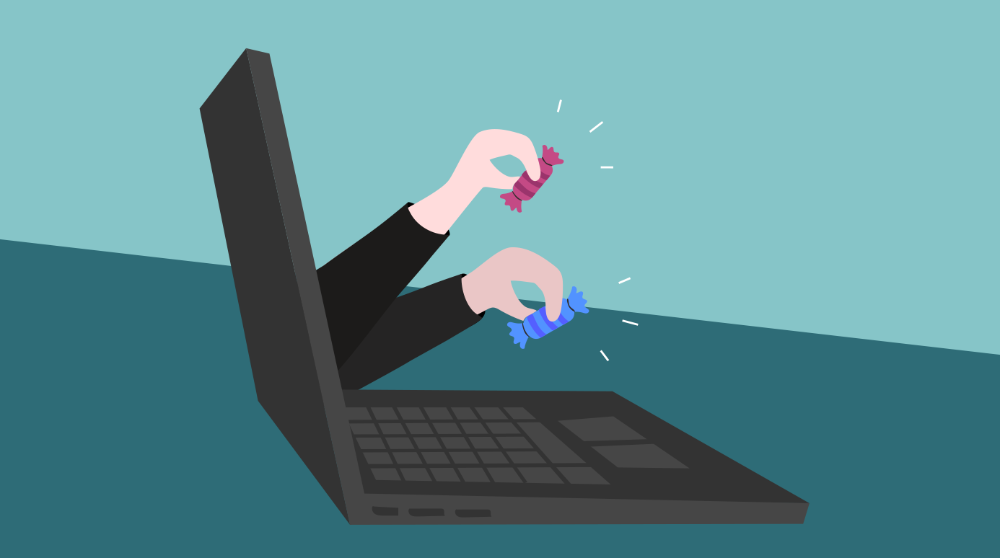

The Internet is much more anonymous than the real world. People can hide their identities or
even pretend to be someone they're not. This can sometimes present a real danger to children
and teens who are online. Online predators may try to lure kids and teens into sexual conversations
or even face-to-face meetings. Predators will sometimes send obscene material or request that kids
send pictures of themselves. Therefore, it's important to teach your kids to be on their guard whenever
they're online. Teens are generally more at risk from predators. Because they are curious and want to be
accepted, they may talk to a predator willingly, even if they know it's dangerous. Sometimes teens may
believe they are in love with someone online, making them more likely to agree to a face-to-face meeting.
While it's not necessarily likely that your child will be contacted by a predator, the danger does exist. Below are some guidelines you can tell your kids to help them stay safe from online predators. Avoid using suggestive screen names or photos. These can result in unwanted attention from online predators.
If someone is flattering you online, you should be wary. Although many people online are genuinely nice, predators may use flattery to try to start a relationship with a teen. This doesn't mean you need to be suspicious of everyone, but you should be careful. Don't talk to anyone who wants to get too personal. If they want to talk about things that are sexual or personal, you should end the conversation. Once you get pulled into a conversation (or a relationship), it may be more difficult to stop.